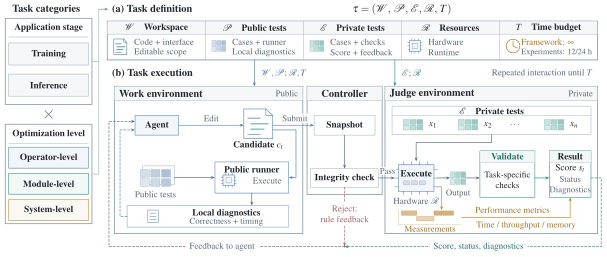

Architecture
A shared task specification and a Work–Controller–Judge feedback loop.

Three components
- Work environment
- The agent edits code, profiles performance, and runs public tests here. It receives permitted judge feedback; private test cases and scoring code stay hidden.
- Controller
- Snapshots allowed files and checks task rules and editable scope. Accepted submissions go to the Judge; rejected submissions return a reason without a score.
- Judge environment
- Evaluates accepted candidates on private tests: checks correctness, quality, and applicable memory constraints, then measures performance. Returns a score, status, and permitted diagnostics.
Task specification
- WWorkspace
- Starting code or an interface to implement, plus the files the agent may edit.
- PPublic tests
- Visible test cases and a runner for local correctness checks and profiling.
- EPrivate tests
- Hidden cases, validation rules, the scoring objective and its direction, and permitted feedback.
- RResources
- The task’s hardware allocation and software runtime.
- TTime budget
- Wall-clock time, including tool execution and feedback waits. T may be unbounded; experiments use 12 h for operators and 24 h for modules and systems.